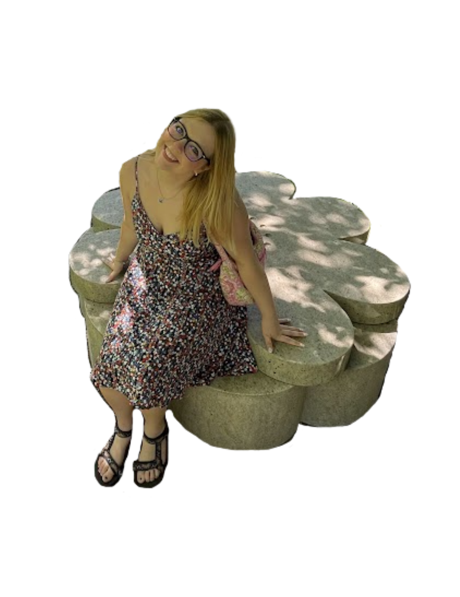

Welcome to my portfolio!
Hi, I’m Abby Williams, a senior at Missouri S&T pursuing a degree in Computer Science. I’m passionate about building innovative, efficient, and secure digital solutions, with interests spanning web development, software engineering, cybersecurity, consulting, and artificial intelligence.
I bring hands-on experience from internships in web development and security consulting, where I’ve contributed to real-world projects and gained a deeper understanding of the challenges and opportunities within the tech industry. Whether I’m writing clean code, analyzing system vulnerabilities, or collaborating with cross-functional teams, I’m driven by curiosity and a desire to make a tangible impact.
As I prepare to graduate, I’m excited to continue growing as a developer and problem solver, exploring roles that let me blend technical skills with strategic thinking.
This website was created to show my skills in web development, software development, and cyber security. Feel free to explore my portfolio to see my experiences, projects, and much more!
I created this website using HTML, CSS, and JavaScript, and I practiced using some WindSurf AI.